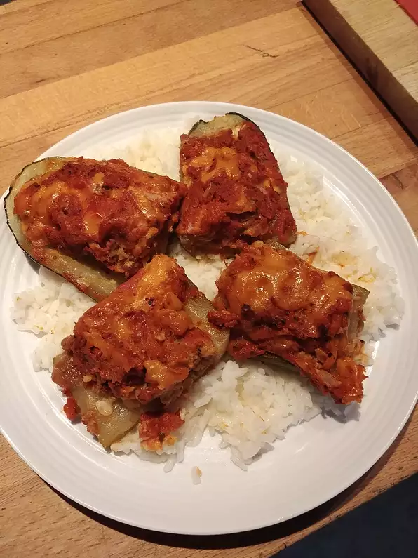

Stuffed Zucchini

Description
This stuffed zucchini recipe is good served with French bread and a salad.
Ingredients
- 3 medium zucchini
- 1 pound pork sausage
- 1 cup dry bread crumbs
- ½ cup grated Parmesan cheese
- 1 clove garlic, minced
- 1 (32 ounce) jar spaghetti sauce
- ½ cup shredded mozzarella cheese
Steps
- Preheat the oven to 350 degrees F (175 degrees C).
- Trim stems from zucchini and slice lengthwise. Scoop out seeds and place them in a large bowl. Add sausage, bread crumbs, Parmesan cheese, and garlic; mix to combine.
- Stuff squash with sausage mixture and arrange in a 9x13-inch baking pan. Pour spaghetti sauce over the top and cover with aluminum foil.
- Bake in the preheated oven until sausage is browned and cooked through, about 45 minutes. Remove foil and sprinkle with mozzarella cheese; continue to cook until cheese is melted, about 15 minutes more.